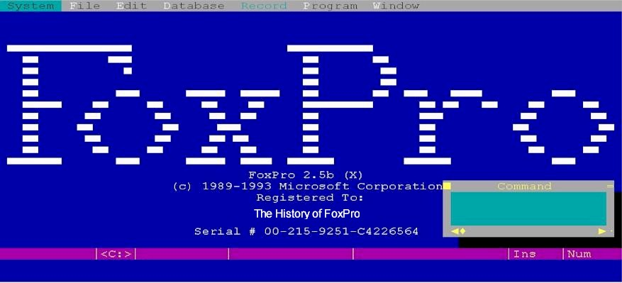
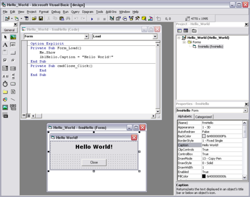
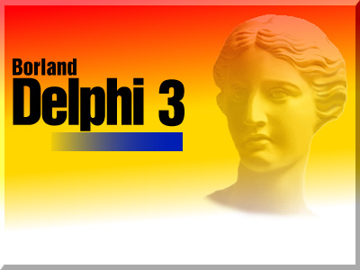
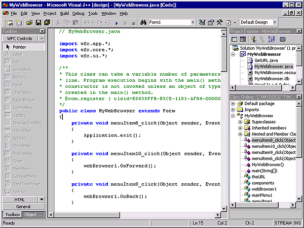
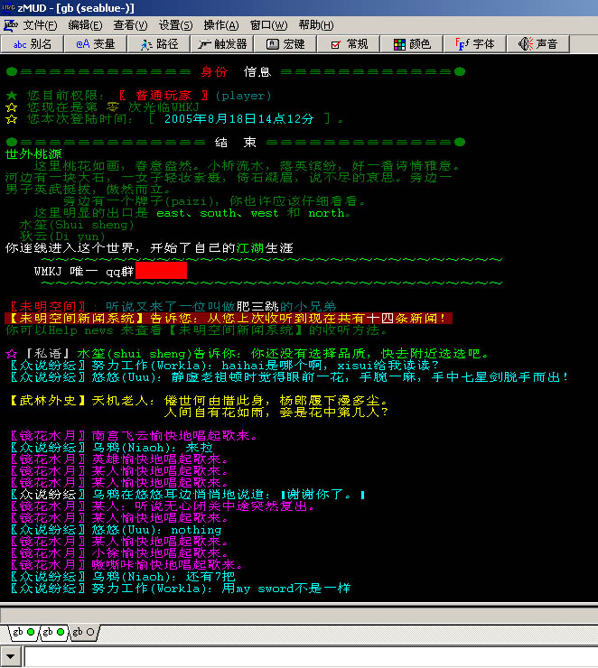

收家的时候发现了一张VC++6.0的光盘，实然引发了我的怀旧情结。于是在微博上感叹了一下，看到一些朋友的回应，还有朋友提到了Turbo C 2.0，于是更回放大了我的怀旧情绪，让我回想了很多N年前伴我走过编程之路的软件。现在看下来，有些感叹，又有些可笑。感叹的是技术发展的变迁，可笑的是当时的一些想法。（Unix/Linux是在大四和毕业的时候接触的，虽然这是我的强项，但是这下面的编程这么多年来没什么变化，所以就不提了）注：图片较多，请稍等。
还记得第一次接触编程是在高中的时候，用中华学习机学Basic程序，后来到了大学，虽然学校的课程没有教Basic语言，但是DOS下有一个叫Quick Baisc的东西让我把高中时的知识又捡了回了。
大学里学的第一门语言是Pascal，所以，用的编程软件也就是Turbo Pascal，还记编译起来巨快无比，尤其是那个只有软盘和640K的基本内存的时代。

在这里还需要提一点的是当时的一个学习打字指法的软件，TT，呵呵。还记得当时整日整夜的去机房练打字，练指法速度。还记得当时能打到38分就算是相当的NB了。

这是当时TT中的一个游戏，很好玩。

然后开始学C语言，于是Turbo C 2.0成为了那个时代的经典，我还记得当时学校里的386电脑没有内存，没有硬盘，只有两个软驱，一个是3寸的，一个是5寸，而Turbo2.0的大小太大（2M多）所以，得把所有的头文件和lib文件放在3寸盘上，而主程序员放在5寸盘上，A盘和B盘同时来编译我的C程序，编译的时候，那叫一个慢啊，那是一个听着软驱咯吱咯吱的声音的时代。

后来，用Turbo C 的图形库在DOS下画各种菜单，按钮，被支持鼠标等等，非常欢乐。（注：那时能写一个支持鼠标的程序是相当拉风的）

当时，Turbo C还是不足开发企业级应用，企业级的MIS系统需要数据库的支持，Foxbase是当时在学校里学的第一个和数据库有关的东西，现在完全忘 了。我还记得foxbase是当时计算机水平考试里的一个很重要的一环。

foxbase很快就淘汰了，举而代之能开发企业级应用的是FoxPro，看到FoxPro的强大，尤其是对菜单，表单，按钮等的支持，当时觉得这是世界上最NB的编程工具了。还跟着老师开发了一些MIS系统。后来听老师说，他们给昆明车管所使用foxpro来管理昆明的自行车，因为数据量太大，FoxPro经常崩溃。这可能是我听说过最早的电子政府系统了。

Win3.2/Win95下的Foxpro更不用说了，NB啊。当时的神器啊。

进入Win95图形界面时代Borland C++也是需要提一下的，只是当时学校没有C++的课程，所以完全不懂，而且因为Foxpro和其些如VB，Powerbuilder的RAD编程工具的泛滥，甚至觉得Borland C++和VC++完全没戏。呵呵。

PowerBuilder掀开了另一个企业级应用的时代，C/S结构。太强了，在大三大四的时候，在老师开的公司里用这个东西为丽江三合酒店，一个送水公司，还有云南省外事办公室开发过其MIS系统。使用PowerBuilder一直到2002年，交行总行国业务系统的前端，还有上海电信系统。今天还有人在用这个东西开发软件么？

VB也是一个划时代的产品，不过好像从来都是一个编程初学者的玩具，当时我学过VB，感觉其把编程搞成了一个搭积木的过程。我在当时草草地使用了VB，因为那时出了一个叫VB killer的东西——Delphi。

Delphi的时代是相当生猛的一个时代，企业级开发，自带数据库，可以制作各咱小工具软件和网络软件，等等，到后来的Delphi7还支持多层结构和分布式，在Delphi的时代，我记得那时的狂热，网上有很多超NB的控件可以让你开发出相当炫的界面。



还记得C++ Builder吗？搞得跟Delphi一模一样，但是编译的速度慢得实在是不行。

VC++的时代应用是从北大的《Windows编程设计》一书发布时开始的，这才是真正的SDK编程。于是我开始喜欢使用VC++了。一直到今天。VC++6.0是一个经典，直到今天的VS2008，我还是要把热捷和界面搞成VC6.0的风格。呵呵。


刚参加工作的时候，单位里用Lotus Notes做办公自动化软件的平台，于是我学习了怎么在Notes下开发应用。后来还用这个玩意给一些银行开发过一些办公自动化流程的应用。我有一个同学相当痴迷于这个平台。现在看来，有点非主流了。

在大三的时候，Java和WEB出现了，系上接到了一个项目，需要用HTML+Java的方式做一些在线的教学课件。但是，当时连一本HTML的书都没有，又上不了网，我只能在看一些盗版光盘里的HTML的文件的例子来学习。那时，基本上是用notepad来写HTML，这让我对HTML打下了非常扎实的基础。后来知道有一个叫HotDog的专门用来写HTML的软件，用了一段时间。

但最终还是使用了微软的FrontPage多一些，直到Dreamweaver的出现。

当时的开发环境用的是NetScape，就是下面这点鸟样的东西了。

在大三大四做那个操作系统的教学课件的时候，开发Java Applet的IDE主要是用Cafe，Java Workshop。当时用这些东西开发了一些Applet用来演示UNIX操作系统内存分配，进程调度，文件存储等算法的动画。还得了个大学生挑战者杯的鼓励奖。现在想想，如果当时有Flash的话，可能做这些演示动化就不用那么麻烦了。

总体来说，Java Workshop也不好用。还是更多的使用Cafe写Java程序。

毕业两年后在工作上因为要做IBM?Websphere上的应用，于是使用了IBM的Visual Age for Java，现在看来，这些IDE真是太土了。

关于Java的开发工具还有两个东西，一个是Microsoft的J++，另一个是Borland的JBuilder。J++ 就像是一个笑话，非标准的，据我所知没有人用。

JBuilder流行了很多年，还得了很多奖，几乎成了Borland的最后一个支柱产品，不过当时因为我皈依Linux/C/C++了，所以，也就没有搞Java了，不过这个IDE还是相当的优秀。不知道现在还有没有人用。不过，现在的Java IDE被Eclipse 一统山河了。

好了，上面是一些关于编程方面的，还有一些比较经典的软件如下。
一个是汉字平台，香港金山公司的UC-DOS，和WPS，当时的我还纳闷，为什么香港人也用简体中文了。对此，我心中对祖国的热爱小小的升华了。

还有杀毒软件，KV300和kill
帮朋友修电脑用得最多的就是PC Tools

玩游戏的必备——FPE

有谁还记得这个看图软件——SEA？

Zmud——当时的网游戏。也是需要练级。在大四和刚工作头一年疯玩过Zmud，之后，对于今天的这些大量的网游没有什么兴趣了。

还有当时用猫上网的年代，NetAnt成了下载软件的装机必备。下载速率平均只有3k-4kBps，这种生活是怎么过来的啊。哈。

相信你也有你自己的怀旧的故事，不妨分享一下。
（转载本站文章请注明作者和出处 酷 壳 – CoolShell ，请勿用于任何商业用途）